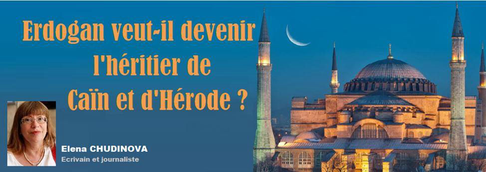
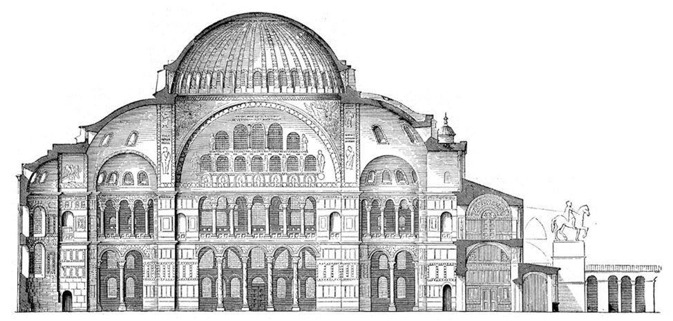
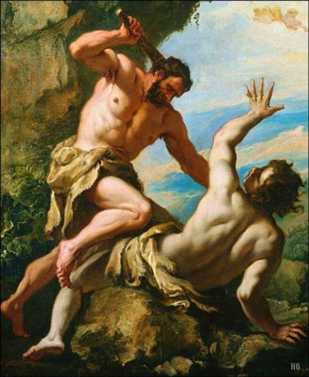
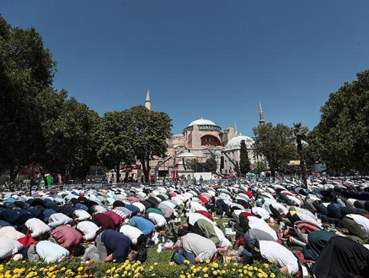
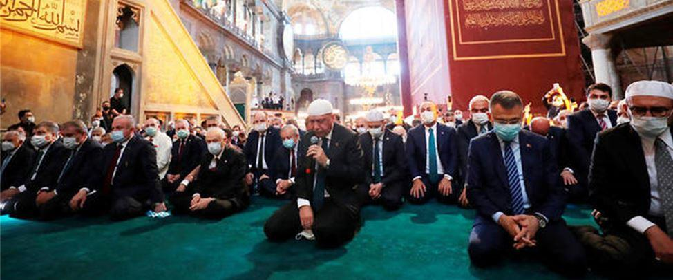

Erdogan veut-il devenir l’héritier de Caïn et d’Hérode ?
par Elena CHUDINOVA

Au milieu de cet été, un triste événement s'est produit pour l'ensemble du monde chrétien. À Constantinople, dans l'ancienne église Sainte-Sophie, pour la première fois depuis de nombreuses décennies, la Salat du vendredi a eu lieu. Le temple n'a plus le statut de musée.
Constantinople est le berceau du christianisme Oriental. Mais l'importance de cet événement touche les intérêts de tous les chrétiens.
Pour la chrétienté, il est beaucoup mieux de voir la Turquie laïque que musulmane.
L'Empire ottoman du début à la fin était un agresseur dont les actions visaient notre civilisation.
Dans l'Empire ottoman, il y avait des mœurs si inhumaines que son offensive était plus terrible que la peste. Rappelons-nous seulement quelques-unes de leurs installations monstrueuses. Tout d'abord-sur la loi Fatih, qui a officiellement approuvé Mehmet II. (« Fatih » signifie « conquérant », tel était le surnom de Mehmet). Selon cette loi, le nouveau Sultan devait (« si nécessaire »), en accédant au trône, tuer tous ses frères. Cette loi était parfois appliquée dès le XIXe siècle.
Depuis des temps immémoriaux, il n'y a pas eu de Sultan à la Sublime Porte qui n'aurait pas commis le péché de Caïn ou du moins n'aurait pas été élevé dans la capacité de le faire. Cela n'a pas été considéré comme répréhensible.
Dans notre civilisation, le péché de Caïn-le fratricide –est désigné comme l'un des péchés les plus terribles pour un chrétien.
Étant donné que les nombreux fils du Sultan décédé étaient souvent des enfants et même des bébés, l'intronisation de chaque nouveau dirigeant a été caractérisée par des cas de meurtres de jeunes enfants.

Caïn et Abel - Sebastiano Ricci. 1659-1734. huile sur toile.
On peut dire que l'Empire ottoman a uni le péché de Caïn et le péché du roi Hérode.
Si les ottomans violaient toutes les lois de l'humanité par rapport à leur famille de sang, que pouvaient attendre les autres peuples d'eux ?
Les Ottomans ont pris des peuples soumis une terrible taxe sous la forme d'enfants. De ces garçons, ils ont élevé des janissaires, des fanatiques monstrueux, qui ont été envoyés pour se battre contre les chrétiens. Il y a une terrible perversion dans le fait qu'ils ont transformé des enfants de familles chrétiennes en ennemis du Seigneur Christ.
Ce ne sont pas les nazis, mais les Ottomans qui ont la paternité de l'idée du génocide – et de son incarnation.
Mustafa Kemal Atatürk a créé la Turquie – un pays laïc axé sur le développement plutôt que sur l'agression. Mais les derniers héritiers idéologiques d'Atatürk sont les plus hauts militaires, les généraux ayant été vaincus en 2016.
Erdogan, se concentrant sur le cours général de l'expansion islamique dans le monde, se retire chaque jour du cours d'Atatürk.
Erdogan est le lauréat du Prix international du Roi Fayçal « pour le service de l'Islam ».
Sa première visite officielle a été en turc Kuzey Kıbrıs Türk Cumhuriyeti, un État reconnu uniquement par la Turquie, situé sur la partie nord-est de l'île de Chypre. Il est également partisan d'un Kosovo « indépendant », s'opposant à la reconnaissance du Génocide arménien.
En 1999, il a été reconnu coupable de violation de l'article 312 du code pénal turc « incitation à la violence et à la haine religieuse » et a purgé sa peine en prison. Mais c'était la Turquie d'Atatürk !
Sa devise est en effet celle du poète du début du XXe siècle : « nos mosquées sont nos casernes, nos dômes sont nos casques, nos minarets sont nos baïonnettes et nos soldats fidèles ».
Aujourd'hui, cela semble particulièrement inquiétant, car ce sont les mosquées de nombreux pays européens qui sont des centres clandestins de recrutement d'extrémistes.
Sous Erdogan, il y a une création active avec l'aide de la propagande d'une image « attrayante » de l'Empire ottoman. La Sublime Porte est annoncée dans les films, les jeux informatiques, etc.
La transition de la Turquie vers l'Islam radical, réalisée progressivement, mais sans aucun doute, ne peut que représenter un danger pour les pays de la civilisation chrétienne.
Transformer Sainte-Sophie d'un musée en mosquée est un message menaçant adressé à l'Europe. Mais nous ne l'avons pas lu.
Partager cette page